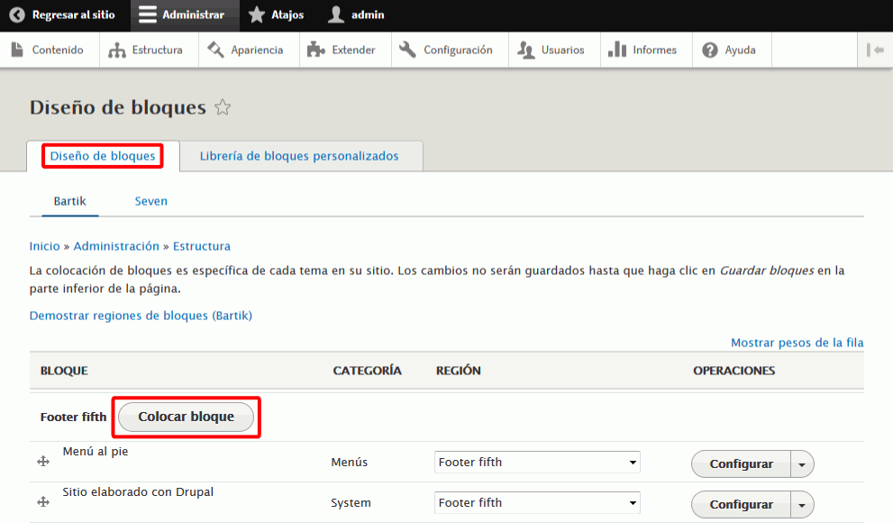

He empezado a actualizar estas soluciones para Drupal 8, pero no he terminado de hacerlo.
He empezado a actualizar estas soluciones para Drupal 8, pero no he terminado de hacerlo.
En esta lección se proponen soluciones detalladas de los ejercicios (3) de Drupal. Se recomienda intentar realizarlos primero sin recurrir a estas soluciones.
En la página Información del sitio, añada el nombre y lema del sitio y haga clic en Guardar configuración:
Hacer clic en la pestaña Librería de bloques personalizados y a continuación en Añadir bloque personalizado:

Rellene los campos del nuevo bloque y haga clic en Guardar:
El nuevo bloque se mostrará en la lista de bloques:
Vuelva a la pestaña Diseño de bloques y en el apartado Footer fifth, haga clic en Colocar bloque:

Haga clic en el botón Colocar bloque del bloque creado:
Se mostrará la ventana de configuración del bloque, en la que hay que desmarcar la casilla Mostrar título y hacer clic en Guardar el bloque:
El bloque Información de copyright del sitio se mostrará en la lista de bloques:
Para eliminar el bloque Sitio elaborado con Drupal haga clic en Eliminar::
Confirme la eliminación haciendo clic en Eliminar:
Nota: Aunque en la ventana se pueda leer que la acción no se puede revertir, el bloque puede añadirse de nuevo.
El bloque Sitio elaborado con Drupal no se mostrará en la lista:
Para reordenar los bloques, arrastre el bloque Información de copyright del sitio debajo del otro y haga clic en Guardar bloque:
Los bloques se mostrarán en el orden deseado:
Y en el sitio se verá el pie de página deseado:


Para crear un enlace a un nodo, por ejemplo un enlace a la página dedicada a Drupal, Joomla! y WordPress en la página dedicada a los CMS:

En este ejercicio se crearán opciones en los menús Principal y Navegación que enlacen a las páginas básicas creadas en el ejercicio anterior.
Referencias:
Normalmente, los enlaces de los menús enlazan a páginas básicas. Al crear una página básica se puede indicar la opción de menú del menú principal que le corresponde. pero también se pueden crear varias páginas básicas y después crear las opciones de cualquier menú que enlazan con ellas.
Los menús principal y secundario se pueden ocultar en Apariencia > Temas activados > nombre del tema actual > Opciones.
El menú Navegación se puede modificar en Estructura > Menús > Navegación > editar menú.
En el menú Contenido se puede ver todo el contenido creado (para ver por ejemplo el número de nodo de una página o artículo concreto).
Crear un nuevo menú e incluirlo (con enlaces a varias páginas básicas) en algún bloque (Estructura > Bloques)
Menús secundario: ver cómo funciona

Se hace de la misma manera que el punto anterior.


y que haciendo clic en la opción CMS se ven los enlaces a las páginas básicas Drupal y Joomla:


 Por escribir
Por escribir
Las taxonomías permiten crear conjuntos de términos predefinidos (vocabularios) que se pueden asociar al contenido generado, de manera que se puedan localizar todos los elementos asociados a un determinado término.
Referencias: